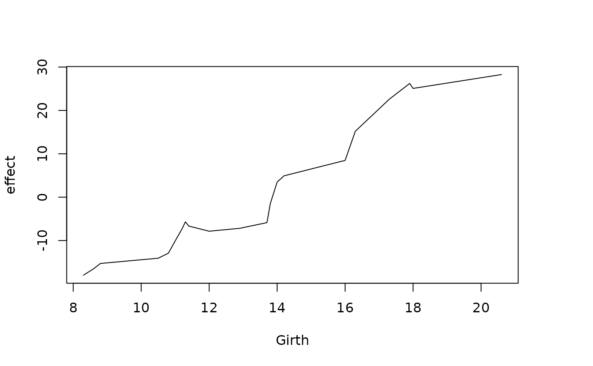
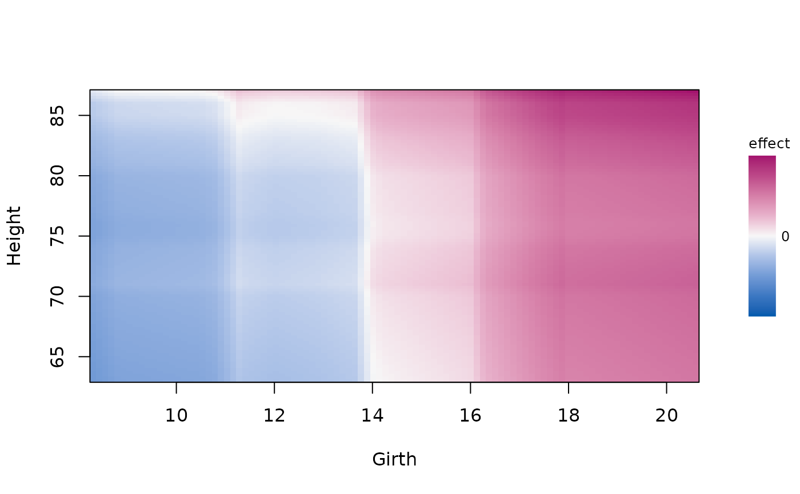
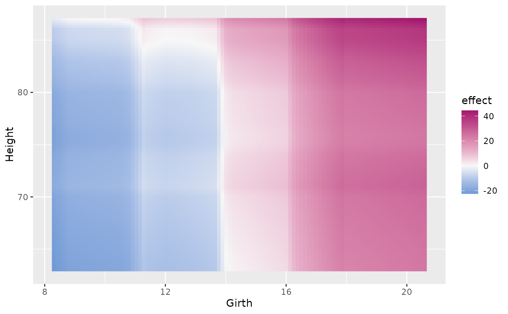

Visualize component functions of a fitted MID model ("mid").
plot() renders via base graphics, while ggmid() returns
ggplot2 objects via the dualplot engine.
Usage
# S3 method for class 'mid'
plot(
x,
terms = NULL,
type = c("effect", "data", "compound"),
theme = NULL,
intercept = FALSE,
main.effects = FALSE,
data = NULL,
limits = c(NA, NA),
jitter = NULL,
resolution = c(100L, 100L),
lumped = TRUE,
...
)
ggmid(object, ...)
# S3 method for class 'mid'
ggmid(
object,
terms = NULL,
type = c("effect", "data", "compound"),
theme = NULL,
intercept = FALSE,
main.effects = FALSE,
data = NULL,
limits = c(NA, NA),
jitter = NULL,
resolution = c(100L, 100L),
lumped = TRUE,
...
)Arguments
- x, object
a
"mid"object to be visualized.- terms
a character vector of term labels/expressions or a formula specifying what to plot. Defaults to all main effects.
- type
visualization style:
"effect","data", or"compound".- theme
a color theme name or
"colortheme"object.- intercept
logical. If
TRUE, adds the intercept to the plotted effect (or inferred from each term expression when omitted).- main.effects
logical. If
TRUE, includes constituent main effects when plotting an interaction term.- data
a data.frame used for
type = "data"/"compound"or when plotting raw-variable expressions (e.g.,"x"whenlog(x)is in the model).- limits
optional numeric vector of length 2 for the effect axis/color limits (may contain
NAfor partial specification).- jitter
numeric amount of jitter for discrete axes when plotting points.
- resolution
integer (or length-2 integer vector for 2D surfaces) specifying the evaluation grid density for continuous variables.
- lumped
logical. If
TRUE(default), uses lumped factor levels when a variable appears only in main effects or only in interactions; automatically set toFALSEfor any variable that mixes both.- ...
additional graphical parameters passed to the underlying
dualplotlayer.
Value
plot() returns NULL invisibly.
ggmid() returns a "ggplot" object for a single plot, or a named list of "ggplot" objects for multiple plots.
Details
Each element of terms produces one plot.
A single element may be a term label (e.g., "Wind", "Wind:Temp")
or a formula-like expression string (e.g., "Wind * Temp + 1" or
"Wind + Temp"), which is extracted via subset.mid()
and rendered as a 1D curve/bar chart or a 2D surface depending on the
number of constituent variables.
For 2D plots, the order in which variables appear in the term expression
determines the x- and y-axes (e.g., "Wind:Temp" vs "Temp:Wind").
If a formula is passed (e.g., ~ Wind + Temp), it is expanded
into individual term plots.
The type argument selects the visualization style:
"effect"(default): plots the component function(s) alone."data": plots observed points fromdatacolored by the component effect."compound": overlays observed points on top of the component function.
Examples
data(trees, package = "datasets")
mid <- interpret(Volume ~ Girth * Height, data = trees, lambda = 0.2)
#> 'model' not passed: response variable in 'data' is used
plot(mid, terms = "Girth")

plot(mid, terms = "Girth * Height")

if (requireNamespace("ggplot2", quietly = TRUE)) {
ggmid(mid, terms = "Girth * Height")
}
